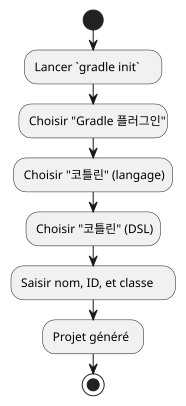

제1장: `gradle init` 명령어로 Gradle 플러그인 처음부터 끝까지 만들기
게시: 23 September 2025
소개
Gradle 플러그인 새 프로젝트를 시작하는 것은 위협적으로 느껴질 수 있습니다. 다행히도, Gradle은 강력한 대화형 어시스턴트를 제공합니다, 작업`init`, 완전하고 깔끔하며 즉시 사용 가능한 프로젝트 구조를 생성하는. 이 가이드는 이 도구를 사용하여 건강한 플러그인 베이스를 만드는 방법을 보여주고, 구조를 설명하며, 처음 빌드 작업을 시작하는 방법을 보여줄 것입니다.
1단계: 프로젝트 어시스턴트 실행
명령`gradle init`은 시작점입니다. 그녀는 명령줄 어시스턴트를 실행하여 프로젝트를 구성하기 위한 일련의 질문을 던집니다.
빈 폴더에서 터미널을 열고 실행하세요:
gradle init어시스턴트가 안내해 드릴 것입니다. 다음은 Kotlin으로 작성된 Gradle 플러그인에 대한 선택 사항입니다:
-
생성할 프로젝트 유형을 선택하세요:선택하세요`Gradle plugin`.
-
구현 언어를 선택하세요:선택하세요`Kotlin`.
-
빌드 스크립트 DSL 선택:선택하세요`Kotlin`.
-
프로젝트 이름:프로젝트에 이름을 입력하세요 (예:`site-baker`).
-
플러그인 id:플러그인에 고유한 식별자를 지정하세요 (예:`com.cheroliv.site-baker`).
-
플러그인 클래스:구현 클래스의 이름을 지정하세요 (예:`com.cheroliv.SiteBakerPlugin`)
완료 후, Gradle은 완전한 파일 트리를 생성합니다.

2단계: 생성된 구조 이해하기
어시스턴트는 루트 프로젝트와 플러그인 자체의 소스 코드를 분리하는 멀티 모듈 프로젝트 구조를 생성합니다.
.
├── gradle/
│ └── wrapper/
│ ├── gradle-wrapper.jar
│ └── gradle-wrapper.properties
├── gradlew
├── gradlew.bat
├── plugin/
│ ├── build.gradle.kts
│ └── src/
│ ├── main/
│ │ └── kotlin/
│ │ └── com/cheroliv/SiteBakerPlugin.kt
│ ├── test/
│ │ └── kotlin/
│ │ └── com/cheroliv/SiteBakerPluginTest.kt
│ └── functionalTest/
│ └── kotlin/
│ └── com/cheroliv/SiteBakerPluginFunctionalTest.kt
└── settings.gradle.kts주요 파일 및 폴더
-
settings.gradle.kts`이 파일은 루트에 위치하며 빌드에 포함된 모듈을 정의합니다. 여기서, 이는 하위 프로젝트를 포함합니다.`plugin.
[소스,kotlin] Please provide the text you would like me to translate. rootProject.name = "site-baker include("plugin") Please provide the French text you would like me to translate.
-
plugin/build.gradle.kts: 플러그인 설정의 핵심입니다. 플러그인을 적용합니다`java-gradle-plugin`, 의존성을 선언하고 플러그인의 메타데이터를 설정합니다.
[소스,kotlin] Please provide the text you would like me to translate. plugins { java-gradle-plugin alias(libs.plugins.kotlin.jvm) }
gradlePlugin { val siteBaker by plugins.creating { id = "com.cheroliv.site-baker implementationClass = "com.cheroliv.SiteBakerPlugin } } Please provide the French text you would like me to translate.
-
src/main/: 플러그인의 소스 코드가 포함되어 있습니다. -
src/test/: 단위 테스트를 포함합니다. 이 테스트들은 빠르고 독립적으로 실행됩니다. -
src/functionalTest/: 기능 테스트를 포함합니다. 이 테스트들은 다음을 사용합니다`GradleRunner`테스트 프로젝트에서 Gradle의 전체 버전을 실행하여 플러그인의 실제 사용 상황을 시뮬레이션하기 위해.
3단계: 플러그인 빌드 및 테스트
생성된 프로젝트에는 다음이 포함됩니다.Gradle Wrapper(gradlew). 이는 모든 개발자가 동일한 버전을 사용하도록 보장하여 재현 가능한 빌드를 가능하게 하므로, Gradle을 실행하는 권장 방법입니다.
기본 작업
-
프로젝트 빌드:
이 명령어는 코드를 컴파일하고, 모든 테스트(단위 및 기능 테스트)를 실행하며, 플러그인의 JAR 파일을 빌드합니다. [소스,bash] Please provide the text you would like me to translate. ./gradlew build Please provide the text you would like me to translate.
-
모든 검사 실행:
작업`check`은(는) 다음을 포함한 모든 검증 작업을 실행하는 별칭입니다.test et `functionalTest`Please provide the text you would like me to translate. [소스,bash] Please provide the text you would like me to translate. ./gradlew check Please provide the text you would like me to translate.
-
단위 테스트만 실행:
개발 중 빠른 피드백을 위해. [소스,bash] Please provide the text you would like me to translate. ./gradlew test Please provide the text you would like me to translate.
|
명령어`./gradlew :test`, 루트 프로젝트를 명시적으로 대상으로 하는 경우 해당 프로젝트에 테스트가 포함되어 있지 않으므로 실패합니다. 반면:
* |
-
기능 테스트만 실행:
더 느리지만, 전반적인 동작을 검증하는 데 유용합니다. [소스,bash] Please provide the text you would like me to translate. ./gradlew functionalTest Please provide the text you would like me to translate.
테스트 결과는 다음 폴더에 생성됩니다.plugin/build/reports/tests/. 파일을 여실 수 있습니다`index.html`상세 보고서를 확인하려면 브라우저에서 확인하세요.
결론
몇 분 안에,`gradle init`귀하의 플러그인 개발을 위해 견고하고 현대적이며 완벽한 프로젝트 기반을 제공해 드렸습니다. 이제 명확한 구조, 사전 설정된 단위 및 기능 테스트, 그리고 Gradle Wrapper를 통한 재현 가능한 빌드 시스템을 활용하실 수 있습니다.
이제 파일을 열 준비가 되었습니다`SiteBakerPlugin.kt`그리고 플러그인의 비즈니스 로직을 추가하기 시작하세요!
관련 기사
31 May 2026
14 May 2026